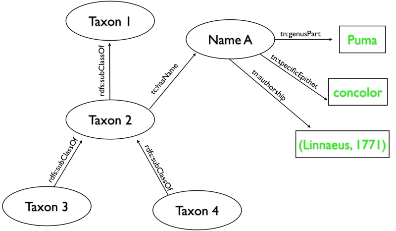
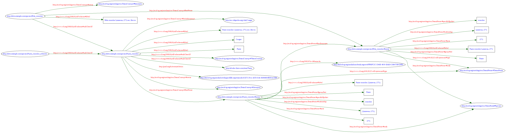

This is an instruction manual that explains how to publish taxonomic data on the web in RDF so that other people can consume it as Linked Data and as part of the Semantic Web. It assumes you are a web developer or are comfortable with basic web technologies such as HTML and HTTP. The technologies mentioned are all widely used and standardised by W3C or IETF and so there are many web and book resources out there to help you. It can be seen as a companion document to How to Publish Linked Data on the Web which contains a series of recipes for serving data. This is a particularly detailed recipe for taxonomic data.
This is not intended to be a discussion document but a practical guide. Although there are some justifications given for particular decisions they are intended only to help with making implementation choices.
Here we cover only the publication of Taxa and Taxon Names and how to link to other resources such as specimens and descriptions. We do not cover how to publish the entire contents of monographs (e.g. specimens, keys, descriptions) but only the basic classification and nomenclature as a framework to link to the other data. Fuller coverage is possible but is left to a later date.
WARNING: This document assumes you have read and understood How to Publish Linked Data on the Web. Everything that is said here builds on what is said in that document so unless you have read it and understood at least the basics STOP READING THIS NOW!
All that is presented here can be summed up by three bullet points:
Everything that follows is detailing how you should do this.
A name is a language unit (word or words) by which a “thing” is known. When two people communicate it is assumed that the names used by one person apply to the same things as when they are used by the other person. If the definition of the words used by two people are incompatible then communication breaks down. Dictionaries are compiled to facilitate unambiguous communication. They provide two key functions:
Scientific names of organisms are like any other names – they are language units by which things are known. Because there are a large number of scientific names and because, for most groups of organisms, any scientist can invent a new name or redefine an existing one there is much complexity associated with their use and a series of nomenclatural codes have arisen as a codification of the accepted best practise.
The key point is that the same name can be used for differently circumscribed taxa. This is sometimes refered to as there being multiple "Taxon Concepts" associated with any one name. It is analogous to a word in a dictionary having multiple, subtly different meanings. If we are to make statements such as:
both Names and Taxa need to have their own URIs. i.e. we "normalize out" the names just as if we were building an dictionary in a relational database.(see non informatics justification Why Normalize Out Names?)
As with a web site it is important that the URIs you use to identify your Taxa and Names are stable. Bear in mind that by publishing them you are inviting people to store them for future reference just as people would bookmark a page in their web browser or link to it from another page. If the URI of a Taxon changes then all the links to it from other resources will break. Do not get hung up on "permanence" or "persistence" of URIs. The priority here is to produce URIs that will work in the maximum number of applications today and should persist for the forseeable future. Planning for the unforseeable is out of scope here. You could read GUID Persistence as Zen Kōan as background.
For general hints and tip on URI design see Cool URIs Some more specific suggestions are made below.
Subdomains provide a very good mechanism for partitioning URIs that are used for identifiers for taxa from URIs that are used for web pages. Suppose your institutional website is run using a content management system. Perhaps this task is even outsourced to a commercial organisation. In this case the http://www.example.com address of the organisation will resolve to the machine or machines that run that service. Any systems administrator will be neverous about messing with URIs in that domain because they may upset the mission critial website. Every few years the corporate website will have a make over and this may break the URIs you have set up. Avoid making system admins nervous and avoid being linked with branding.
If you can arrange a subdomain of your institutional domain then this effectively partitions any URIs you create from what is happening on the WWW subdomain. http://data.example.com or http://id.example.com can be managed entirely separately of http://www.example.com. It only takes the addition of a single rule to the DNS to enable this. A task that will take a systems admin a couple of minutes.
Depending on where your data is located and the control you have over that server the subdomain could be configured either to point directly to your data server or to another server that just handles the 303 redirection.
Using a subdomain combined with hiding implemenation details should make it possible for your URIs to survive just about any change in organisational or technical infrastructure.
If you feel your data may lead a life of its own, separate from the life of the institution in which it currently resides, you may consider "buying" your own domain. This is very simple, cheap and (provided you remember to renew it) a stable way to identify you data. There is a chance that your institution may object to you doing this. It may raise questions about the ownership of data that need to be resolved and are beyond the scope of this guide - but see licensing below.
This URI
http://data.example.com:8080/species/search.php?id=1234
Exposes the fact that the service is a PHP script hosted on port 8080. It also includes a query string that might change. Issuing this URI means that you are forever bound to using a PHP script on port 8080 that takes a variable called "id" (or at least pretending to do so). If you move to a system where port 8080 is not available and you have to use Active Server Pages or Java Server Pages your URIs would break. The URI would be better like this:
http://data.example.com/species/1234
There are numerous mechanisms you could use to achieve a mapping between this simplified URI and the one that goes to the script. The most common approach is URI rewriting on the web server. This is achieved by mod_rewrite on Apache or something like ISAPI_Rewrite on IIS. Mod_rewrite has a reputation for being complex but can be used quite simply for accomplishing this kind of task. Here is an example to map these URIs on Apache:
RewriteEngine on
RewriteRule ^/species/(.*)$ /species/search.php?id=$1
It is possible to have these kind of rules in an .htaccess file so they can easily be implemented on a per-directory basis.
If you are using 303 redirects to get from your non-information resource URIs to your RDF and HTML information resources then you will need three URIs for every Taxon and Name.
Of these three URIs only the first one needs to be a stable URI. Although best practise should be followed in designing numbers two and three they are only the locations of metadata documents and as such can be more dynamic. Other people will be principally linking to number one.
Many user agents will do bytewise string comparisons between URIs to determin equality. There is a danger that they will compare URI escaped versions of the URI with unescaped versions. There is also a danger URI escaped version will be presented to the user and appear more unintelligible than an ASCIIfied version of the URL - thus defeating the object of including non-ASCII characters.
Because of the way user agents will compare URIs they should be treated as case sensitive even if the current server will respond correctly to case insensitive.
Other than for resolution a URI is treated as an arbitrary set of characters. It is therefore hard to object to those arbitrary characters being in the form of a Taxon Name, especially if it makes debugging simpler and adoption more widespread. Before adopting the use of Taxon Names in URIs three dangers should be born in mind.
How to Publish Linked Data on the Web recommends not using blank nodes in RDF graphs returned and so you will need to provide a URI for both Taxa and Names. If you are publishing a classification in which the names are more than simple strings you will be producing at least two URIs for every Taxon (all taxa have names). This need not cause a proliferation of URIs and a management headache.
If you are using 303 redirects you should simply use the same base URI for the Name as you do for the Taxon but add a #name anchor to the end.
http://data.example.com/species/Puma_concolor
http://data.example.com/species/Puma_concolor#name
If you are already using the hash based approach you should adopt a convension for generating two anchors that suits you. Adding "-name" to the end of the existing anchor is the recommended approach.
http://data.example.com/species#Puma_concolor
http://data.example.com/species#Puma_concolor-name
Hash URIs should be used for smaller sets of resources (< c100 Taxa) that evolve together. If you have a complete classification, perhaps the contents of a monograph, then you should publish it as a single, static file. This approach is equally appropriate to dynamically evolving data (a monographic work in progress) as it is data that will never change (a version of a work published on paper). You can simply update the static file on the web server as the work progresses. Each request for one of the URIs in the file will result in the entire file being downloaded. Bear in mind that it would be difficult to change from hash URIs to 303 redirects so if the data is still growing it must not be expected to grow beyond c200 taxa.
If the classification is large (> c200 Taxa) you should use a 303 redirect based approach although it may be possible to devise a policy of breaking it down into logical sections (e.g. genera or subgenera), each with less than c100 Taxa and publishing these as static files with hash URIs.
RDFa is a method for embedding RDF in HTML documents. There is an excellent primer on RDFa that you should read if this approach sounds attractive.
An increasing number of user agents are able to recognise the existence of RDFa in an HTML page and extract the resultant RDF graph from the document. The use of RDFa is appropriate if:
Because of its potential for integrating RDF support into existing systems full examples will be given here but there are disadvantages of this approach:
Here we will work through an example of describing a Taxon and Name. I use RDF/XML as the default rendering because people are more familiar with XML than Turtle and may be using a templating approach to produce RDF/XML output.
The basic RDF graph for a classification will look something like this. Where resources (identified by URIs) are in ovals and literals are in rectangles.

We will work through an example to create an RDF output for a single Taxon and Name.
<?xml version="1.0"?>
<rdf:RDF xmlns:rdf="http://www.w3.org/1999/02/22-rdf-syntax-ns#">
...
</rdf:RDF>
After the XML declaration the RDF root element establishes the contents as RDF/XML. It is good practise to place all the namespace declarations in rdf:RDF element. It is also common not to set the default namespace for the document (with xmlns="...") but to specify the namespace for every element and attribute. Sometimes it is useful to use XML entity declarations where the same namespaces are used repeatedly as attribute values. The Jena class libraries take this approach when serialising RDF graphs but for clarity it won't be used here.
<?xml version="1.0"?>
<rdf:RDF xmlns:rdf="http://www.w3.org/1999/02/22-rdf-syntax-ns#">
<rdf:Description rdf:about="http://data.example.com/species/Puma_concolor" >
<!-- assertions about this taxon come here -->
</rdf:Description>
<rdf:Description rdf:about="http://www.example.com/species.php?id=123&format=rdf" >
<!-- metadata assertions about this document come here -->
</rdf:Description>
</rdf:RDF>
We wish to pass information about Puma concolor and so create a HTTP URI for that taxon (http://data.example.com/species/Puma_concolor) but in doing so we will also need to pass metadata not about the cat itself but about the message that contains the information about the cat. If we simply added a dc:modified date to the Puma concolor descriptive block then it would imply that this was the date the taxon was modified rather than the date document about the taxon was modified. Every RDF file therefore needs to include assertions about at least two resources, each identified by HTTP URIs.
[Note that although we are presenting assertions about resources in distinct blocks, one for each resource, this is done only for clarity. The RDF/XML syntax does not require this. Each assertion could be made separately and in any order.]
<?xml version="1.0"?>
<rdf:RDF
xmlns:rdf="http://www.w3.org/1999/02/22-rdf-syntax-ns#"
(1a) xmlns:rdfs="http://www.w3.org/2000/01/rdf-schema#"
(1b) xmlns:tc="http://rs.tdwg.org/ontology/voc/TaxonConcept#">
<rdf:Description rdf:about="http://data.example.com/species/Puma_concolor" >
(2) <rdfs:subClassOf rdf:resource="http://rs.tdwg.org/ontology/voc/TaxonConcept#TaxonConcept"/>
(3) <tc:status rdf:resource="http://rs.tdwg.org/ontology/voc/TaxonConcept#Accepted"/>
<-- more assertions about this taxon come here -->
</rdf:Description>
(4) <rdf:Description rdf:about="http://data.example.com/species/Puma_concolor_cabrerae" >
<rdfs:subClassOf rdf:resource="http://data.example.com/species/Puma_concolor">
</rdf:Description>
<rdf:Description rdf:about="http://www.example.com/species.php?id=123&format=rdf" >
<-- metadata assertions about this document come here -->
</rdf:Description>
</rdf:RDF>
A taxonomic hierarchy is expressed in terms of a nested set of taxon classes. (see Why are Taxa Treated As Classes? in justifications). In order to express this we first introduce a prefix for the RDF Schema namespace (1a). We can then add a rdfs:subClassOf relationship to the Puma concolor block (2) to show that this item is a subClass of TDWG TaxonConcept. TaxonConcept is the root concept of all Taxa a little like 'Thing' in OWL or 'Object' in Java.
We also as a flag (3) to say that we accept this taxon as part of our hierarchy. i.e. something we would want people to attribute things to. We need to setup the namespace prefix for this as well (1b).
If we wish to express here that another Taxon is a subclass of this taxon we can simply add an assertion about that Taxon (4). Here we assert that the subspecies Puma concolor cabrerae is a subclass (or sub taxon if you like) of Puma concolor. Further information about Puma concolor cabrerae can be obtained by the user agent that is consuming this document by resolving the URI http://data.example.com/species/Puma_concolor_cabrerae.
Because Puma concolor cabrerae is a subclass of Puma concolor and Puma concolor is a subclass of TaxonConcept we know that Puma concolor cabrerae is a TaxonConcept. If, however, we had not defined Puma concolor as being a direct subclass of TaxonConcept but instead a subclass of Puma and Puma was defined somewhere else then we would not be able to tell from parsing only this file that any of the resources were in fact Taxa (subclasses of TaxonConcept). It is therefore necessary to assert that the top taxon of the hierarchy in any one file is always a subclass of TaxonConcept even if another super class is also defined. This should have no effect on interpretation of the data. In fact it is acceptable to assert that every Taxon in a file is a subclass of TaxonConcept if this is programmatically easier than discovering the top most taxon.
Linking the hierarchy into a higher taxonomy defined elsewhere would look like this.
<?xml version="1.0"?>
<rdf:RDF
xmlns:rdf="http://www.w3.org/1999/02/22-rdf-syntax-ns#"
xmlns:rdfs="http://www.w3.org/2000/01/rdf-schema#">
<rdf:Description rdf:about="http://data.example.com/species/Puma_concolor" >
(1) <rdfs:subClassOf rdf:resource="http://rs.tdwg.org/ontology/voc/TaxonConcept#TaxonConcept">
(2) <rdfs:subClassOf rdf:resource="http://id.elsewhere.com/taxa/Puma"/>
<tc:status rdf:resource="http://rs.tdwg.org/ontology/voc/TaxonConcept#Accepted"/>
<-- more assertions about this taxon come here -->
</rdf:Description>
<rdf:Description rdf:about="http://data.example.com/species/Puma_concolor_cabrerae" >
<rdfs:subClassOf rdf:resource="http://data.example.com/species/Puma_concolor">
</rdf:Description>
<rdf:Description rdf:about="http://www.example.com/species.php?id=123&format=rdf" >
<-- metadata assertions about this document come here -->
</rdf:Description>
</rdf:RDF>
Note that although we have added the rdfs:subClassOf assertion at (2) we leave in the rdfs:subClassOf assertion at (1).
So far we have said nothing about the Taxon other than its relationship to apart from Taxa within the same classification. Other than in the results of phylogenetic analysis we are unlikely to encounter anonymous taxa. We will therefore add a name to this taxon.
Here we will concentrate on the Puma concolor descriptive block. Note that we are including the name as a nested element but it could equally be located elsewhere in the file or indeed anywhere on the internet.
<?xml version="1.0"?>
<rdf:RDF
xmlns:rdf="http://www.w3.org/1999/02/22-rdf-syntax-ns#"
xmlns:rdfs="http://www.w3.org/2000/01/rdf-schema#">
<rdf:Description rdf:about="http://data.example.com/species/Puma_concolor" >
(1) <rdfs:label>Puma concolor (Linnaeus, 1771) sec. Brown</rdfs:label>
<rdfs:subClassOf rdf:resource="http://rs.tdwg.org/ontology/voc/TaxonConcept#TaxonConcept">
<rdfs:subClassOf rdf:resource="http://id.elsewhere.com/taxa/Puma">
<tc:status rdf:resource="http://rs.tdwg.org/ontology/voc/TaxonConcept#Accepted"/>
<-- more assertions about this taxon come here -->
</rdf:Description>
... (rest omitted for clarity)
The first and simplest thing to do is provide a human readable label for the Taxon itself. We can do this using a rdfs:label property (1). Note that for scientific names we include in the label text an indication of the sense the name is being used in because this is the label for the taxon. Here we say "sec Brown" meaning in the sense of Brown. This is Brown's Taxon circumscription (usage) of the Name Puma concolor rather than some one else's. (See the tc:accordingTo and tc:accordingToString below for more information on this).
It is acceptable to stop at this point and not add any further name details at all if what you write in this field is an arbitrary label. Examples of this are:
If someone, in the future, may want to make a statement like "Taxon A has the same name as Taxon B" then you should not stop at this point and you should include a Name object with its own URI using the tc:hasName property.
<?xml version="1.0"?>
<rdf:RDF
xmlns:rdf="http://www.w3.org/1999/02/22-rdf-syntax-ns#"
xmlns:rdfs="http://www.w3.org/2000/01/rdf-schema#"
(1) xmlns:tn="http://rs.tdwg.org/ontology/voc/TaxonName#">
<rdf:Description rdf:about="http://data.example.com/species/Puma_concolor" >
(3) <rdfs:label>Puma concolor (Linnaeus, 1771) sec. Brown<rdfs:label>
(4) <tc:hasName>
(5) <tn:TaxonName rdf:about="http://data.example.com/species/Puma_concolor#name" >
(6) <rdfs:label>Puma concolor (Linnaeus, 1771) </rdfs:label>
(7) <tn:genusPart>Puma</tn:genusPart>
<tn:specificEpithet>concolor</tn:specificEpithet>
<tn:authorship>(Linnaeus, 1771)</tn:authorship>
<tn:year>1771</tn:year>
<tn:rank rdf:resource="http://rs.tdwg.org/ontology/voc/TaxonRank#Species"/>
</tn:TaxonName>
</tc:hasName>
<rdfs:subClassOf rdf:resource="http://rs.tdwg.org/ontology/voc/TaxonConcept#TaxonConcept">
<rdfs:subClassOf rdf:resource="http://id.elsewhere.com/taxa/Puma">
<-- more assertions about this taxon come here -->
</rdf:Description>
... (rest omitted for clarity)
To add a TaxonName we firstly create a namespace prefixes for another TDWG specific vocabularies (1). Next we include the tc:hasName property in the Puma concolor block that contains another resource - the TaxonName (5). The TaxonName resource is not a blank node but is given a URI. Here we have adopted the strategy suggested above of adding a #name anchor to the Taxon's URI.
Note that although we are now including a full name resource we still include the rdfs:label for the enclosing taxon (3). This is because user agents will still need to render a label for the Taxon object and they will turn to the rdfs:label to do this - especially if they don't understand biological nomenclature.
The TaxonName resource also has an rdfs:label (6). Note this is a single human readable string for the Name rather than the Taxon and so does not contain the "sec. Brown". This is nomenclature and not an opinion. Again there is an opportunity to bailout here. If you do not have a break down of the parts of the scientific name, or if this is a common name, you could choose not to add any more properties to the TaxonName than the rdfs:Label. The TaxonName vocabulary provides a series of properties that should enable you to express the degree of atomisation of names you have available. Here we demonstrating being able to split out the genus part, specific epithet, authorship and year of publication of the name.
There are two types of synonymy recognised in taxonomy. The first is homotypic synonymy (also referred to as objective synonymy). This occurs when a binomial or trinomial name is used in another genus or species from the one it was originally published in. There is therefore a relationship between these two Names and whichever taxon is recognised in a classification the other name automatically becomes a synonym for that taxon. The second type of synonymy is objective synonymy where an author indicates that a named Taxon (or the name bearing part of that Taxon) is rejected and should be considered part of one of their accepted taxa.
Both types are of synonymy are treated the same here using rdfs:subClassOf relationships to the accepted taxa. For homotypic synonymy additional links between Name resources are made (see next section). (see Why are Synonyms Treated As Subclasses? if you need a justification for this - or you could just accept it.)
<rdf:Description rdf:about="http://data.example.com/species/Felis_concolor" >
<rdfs:label>Felis concolor Linnaeus, 1771 sec. Brown</rdfs:label/>
<rdfs:subClassOf rdf:resource="http://data.example.com/species/Puma_concolor"/>
<tc:status rdf:resource="http://rs.tdwg.org/ontology/voc/TaxonConcept#Synonym"/>
<tc:hasName>
<tn:TaxonName rdf:about="http://data.example.com/species/Felis_concolor#name" >
<rdfs:label>Puma concolor Linnaeus, 1771 </rdfs:label>
<tn:genusPart>Puma</tn:genusPart>
<tn:specificEpithet>concolor</tn:specificEpithet>
<tn:authorship>Linnaeus, 1771</tn:authorship>
<tn:year>1771</tn:year>
<tn:rank rdf:resource="http://rs.tdwg.org/ontology/voc/TaxonRank#Species"/>
</tn:TaxonName>
</tc:hasName>
</rdf:Description>
Nomenclature is complex. The primary relationship between names however is the new combination to basionym link in botany or name placement to nominal taxon in zoology. Here they can be treated the same way, as links between the new combination name and the original combination name. To express this link we simply add a tn:hasBasionym link to the new combination.
...
<tc:hasName>
<tn:TaxonName rdf:about="http://data.example.com/species/Puma_concolor#name" >
<rdfs:label>Puma concolor (Linnaeus, 1771) <rdfs:label>
<tn:genusPart>Puma</tn:genusPart>
<tn:specificEpithet>concolor</tn:specificEpithet>
<tn:authorship>(Linnaeus, 1771)</tn:authorship>
<tn:year>1771</tn:year>
<tn:rank rdf:resource="http://rs.tdwg.org/ontology/voc/TaxonRank#Species"/>
<tn:hasBasionym rdf:resource="http://data.example.com/species/Felis_concolor#name"/>
</tn:TaxonName>
</tc:hasName>
...
Here we have added Felis concolor as the basionym of Puma concolor
The more links you put in to other Classifications and Nomenclators the more valuable your published data will be. The table below shows recommended relationships and when they should be used.
| Property | General Meaning | Taxon-Taxon Links | Name-Name Links |
|---|---|---|---|
| dc:relationship | The two resources are related in some way. Like "see also". | The most general relationship between taxa. If in doubt use this link. | The most general relationship between names. If in doubt use this link. |
| dc:isVersionOf | This resource is a version of that resource but not exactly the same thing. | Use if you are aggregating taxa from multiple sources. Issue your own URIs for the Taxa but link back to the source Taxa with this. | Use with caution. Some cases of spelling variants may be appropriate but generally names as either the owl:sameAs not. |
| owl:equivalentClass | This class has exactly the same membership as that class. | If all specimens identified to one taxon would also be identified to the other and vise versa use this. | Do Not Use. Names are individuals not classes so this is not appropriate. |
| owl:sameAs | Whatever is true of this resource is also true of that resource. They are the same resource. | Use with caution. Only for static taxa such as those published in monographs. | Use to link to recognised nomenclators. |
Note that Taxa are linked to Taxa in different ways to the ways Names are linked to Names. Taxa are classes of things and so care should be taken not to treat them like individuals or you could restrict the way user agents will be able consume the data.
Linking to other Classifications and Nomenclators is one of the hardest things to do. There is a need for tools to be developed to help do this. There are some aspirational goals that, if we all did them, would enable a global network of taxonomic resources.
In our example we will link the Name to ZooBank and the Taxon to Catalogue of Life.
<rdf:Description rdf:about="http://data.example.com/species/Puma_concolor" >
...
<dc:relation rdf:resource="http://lsid.tdwg.org/urn:lsid:catalogueoflife.org:taxon:dec52d72-29c1-102b-9a4a-00304854f820:ac2009"/>
<tc:hasName>
<tn:TaxonName rdf:about="http://data.example.com/species/Puma_concolor#name" >
<rdfs:label>Puma concolor (Linnaeus, 1771) <rdfs:label>
<owl:sameAs rdf:resource="http://lsid.tdwg.org/urn:lsid:zoobank.org:act:6FFAFC2C-D46B-4959-BA03-C38477B9DFF1"/>
</tn:TaxonName>
</tc:hasName>
...
</rdf:Description>
The more links you add to other resources the better but care should be taken not to add general properties directly to the Taxon. This is because anyone importing the data into an OWL ontology and wanting to treat the Taxon as a class (which is the assumed modus operandi) will need to designate these properties as OWL annotation properties. Doing so may break other parts of the ontology they are building.
Here we will add some general information about Puma concolor using the tc:hasInformation property to link it to the Wikipedia page for the species
<rdf:Description rdf:about="http://data.example.com/species/Puma_concolor" >
...
<tc:hasName>
<tn:TaxonName rdf:about="http://data.example.com/species/Puma_concolor#name" >
...
</tn:TaxonName>
</tc:hasName>
<tc:hasInformation rdf:resource="http://en.wikipedia.org/wiki/Cougar" />
...
</rdf:Description>
We could provide a whole raft of information in the tc:hasInformation resource. Here we include an abstract.
<rdf:Description rdf:about="http://data.example.com/species/Puma_concolor" >
...
<tc:hasName>
<tn:TaxonName rdf:about="http://data.example.com/species/Puma_concolor#name" >
...
</tn:TaxonName>
</tc:hasName>
<tc:hasInformation>
<rdf:Description>
<dc:abstract>
The Cougar (Puma concolor), also known as puma, mountain lion, catamount,
or panther, depending on the region, is a mammal of the Felidae family,
native to the Americas. This large, solitary cat has the greatest range of
any large wild terrestrial mammal in the Western Hemisphere, extending
from Yukon in Canada to the southern Andes of South America. An adaptable,
generalist species, the cougar is found in every major American habitat type.
It is the second heaviest cat in the American continents after the jaguar,
and the fourth heaviest in the world, along with the leopard, after the
tiger, lion, and jaguar, although it is most closely related to smaller felines.
</dc:abstract>
</rdf:Description>
</tc:hasInformation>
...
</rdf:Description>
Any properties from well known vocabularies can be added directly to the Name.
Vernacular names should be handled very simply using the rdfs:label property and xml:lang attribute. A common name should consist of a UTF-8 encoded string plus a language tag in accordance with the Internet Engineering Task Force (IETF) best current practice for the contents of language tags BCP 47. Typically this is the two letter language code from ISO 639-1 followed by a hyphen followed by a two letter country code from ISO3166-1 for example the familiar “en-US”. It also allows for more sophisticated use e.g. "sr-Latn-CS" represents Serbian ('sr') written using Latin script ('Latn') as used in Serbia and Montenegro ('CS').
Here we define a vernacular name in English as used in the United States of America and French without specifying a region. Note that we leave scientific name without a specified language.
<rdf:Description rdf:about="http://data.example.com/species/Puma_concolor" >
<rdfs:label>Felis concolor Linnaeus, 1771 sec. Brown<rdfs:label/>
<rdfs:label xml:lang="en-US" >Cougar</rdfs:label>
<rdfs:label xml:lang="fr" >Puma</rdfs:label>
...
</rdf:Description>
Note that vernacular names are added to the Taxon not the Name resource.
A complete example file with all the code we have produced is available here. This is the graph produced by the RDF validator when the complete example file is run though it. [click to enlarge] 
The worked example above does not include any mention of what to put in the metadata about metadata block where it says "metadata assertions about this document come here". This guide is focused towards expressing taxonomic and nomenclatural data not general metadata and inclusion of assertions concerning the document would make the graphs overly complex. You should follow best practise and include as many assertions in here about the document as possible. Many of the DCMI Metadata Terms will be appropriate. Your organisation may also have specific requirements for metadata tagging of documents. There are two things that warrant particular attention; licensing and attribution.
If a user is fetching data from multiple sources, combining that data with some of their own and then republishing it as new work then it is important they know on what basis they are allowed to use the data. So inclusion of licensing information is very important.
What is possibly more important is the need for consistency in licensing. If a user retrieves data from twenty sources all of which have their own terms of use then it would be a major job to read and understand them all. It is therefore recommended that, unless it is absolutely essential not to, you publish taxonomic data under a Creative Commons License. The Attribution-Share Alike 3.0 Unported license which comes close to the intention most scientists have when they share their work. Here is an example of how to do this:
<rdf:Description rdf:about="http://www.example.com/species.php?id=123&format=rdf" >
<dc:license rdf:resource="http://creativecommons.org/licenses/by-sa/3.0/" />
...
</rdf:Description>
Following best practise you would also be including details about yourself using dc:publisher, dc:creator and possibly dc:rightsHolder which would make it easy for the user of the data to credit you.
One of the most discussed conceptual problems with publishing Globally Unique Identifiers (in our case HTTP URIs) is how to handle change. A common question is "How much can a taxon change before the GUID is changed?" This is more of a conceptual problem than a technical one. Having separate URIs for the document and the data objects makes it easy to prescribe a solution.
When a HTTP URI is published it is the identity of the resource. If a user agent wants to ascertain whether two resources are the same resource they do so by comparing the HTTP URIs not by looking at the data or metadata associated with those URIs. Remember that, through content negotiation, the same URI may be represented by different data to different user agents e.g. a machine harvesting RDF verses a human using a web browsers. It is conceptually the same if the same user agent gets different data/metadata each time resolves URI. The agent can know that this is the same thing but the data about the thing has changed. At no point does the thing become something else, even if every last bit of data is changed and it is delivered in a different format.
Practically there are two type of change that have to be managed.
If static, unchanging data is a requirement for the user then it is their responsibility to maintain a copy of the data in a log term cache. The user can not assume that they will always be able to resolve the URI (for numerous reasons) or that they will always get back the same data or data in the same format.
As a data publisher the most important thing you can do to make your data permanently available is to releasing it under an open and easily understood license, preferably a license that is identified by its own URI so that it can be understood by machines such as a Creative Commons license.
As briefly mentioned in the "Adding the Name Resource" section it is important to show who's version of a taxon you are publishing in the rdfs:label. The reason for stating this is to differentiate this Taxon from any other Taxa that may use the same scientific name - for the benefit of human users. We didn't provide any formal linking to the author of the taxon. Each Taxon is already uniquely identified by an HTTP URI and so there is no need to formally differentiating this Taxon from other Taxa with the same scientific name for machines to see they are different. It is therefore not essential to include such links.
Often it is appropriate to provide linking to the author of the Taxon (not Name). How this is done will depend on the nature of the data being published.
Digitisation of Literature. If your RDF represents the digitisation of some stable resource, such as a monograph or flora then you should put a URI to the publication (perhaps a proxied DOI or ISBN or BHL page link) in the tc:accordingTo and a full citation to the work in the tc:accordingToString.
Aggregation of Multiple Classifications If you are an aggregator of multiple classifications from multiple sources then you should publish the taxa as if they were your own invention but link to the source classifications (see sections below). The tc:accordingTo field should contain the URI of your database (preferably a URI that will return RDF metadata as per linked data but failing this the URI of your website). The tc:accordingToString should contain the full 'brand' name of you project.
Management Hierarchy If you produce a classification as part of a management structure for other data, such as a occurrence records or gene sequences, then you should behave as if you were an aggregator of multiple classifications. i.e. use your own URI in the tc:accordingTo and your own name in the tc:accordingToString. You may decide that you want to link to source classifications as described below or you may not but you should still publish your classification as linked data so that others can make assertions about it. Unless you do this no one will be able to relate their accepted taxonomies to yours - even to correct it.
There are two further properties it is important to add to the Taxon. These indicate who's Taxon this is i.e. who's circumscription of the recommended use of the name it is. You indicate this using the two "according to" fields.
tc:accordingTo - Should contain a link to another resource (an HTTP URI).
tc:accordingToString - Should contain a human readable string of the resource.
Precisely what you put in these fields will depend on the what kind of classification you are representing.
Our example is of a mythical big cat monograph.
<rdf:Description rdf:about="http://data.example.com/species/Puma_concolor" >
<rdfs:label>Puma concolor (Linnaeus, 1771) sec. Brown<rdfs:label>
<tc:accordingTo rdf:ref="http://dx.doi.org/10.1000/demo_DOI" />
<tc:accordingToString>Brown, D.A. (2012) Felidae: Evolution and Classification.
Mega Pubishing: London, New York, Brasilia</tc:accordingToString>
...
</rdf:Description>
Obviously you should avoid representing the same published classification on line as some one else but, ultimately, it doesn't matter if you do put up the same previously published classification. When you discover that both versions of the classification exist on the web you can link them together using the terms given above. Even if you don't discover it then some third party can introduce the linking assertions in their own revisionary classification.
Generally it is better to have the risk that there are two versions of the same classification on the web than the absence of either version because people are afraid to publish them. The important thing is that they are all correctly identified using HTTP URIs so that any duplications can be clearly asserted.
In the long run the version that is 'better' will win out. If the URIs always resolve and the metadata is complete, with many links to and from other resources, then it will be accessed more and linked to more.
General Rule: Better to do it yourself and do it well than wait for someone else to get round to it - they may never do it.
The original Taxon Concepts Schema was designed as an XML Document syntax in XML Schema. As such there was a need to include a lot of plumbing concerning the definition of resources and classes that "comes for free" when we use the RDF, RDF Schema, OWL and Dublin Core metadata terms.
When an RDF based version of TCS was produced for the TDWG Vocabularies an attempt was made to enable a mapping between TCS and TCS-RDF. This meant that a large number of the constructs in TCS were represented in the vocabularies (although many were dropped).
This document presents the minimum necessary to express taxonomic hierarchies with correct nomenclature. As so it only uses twelve specialist terms from the TDWG namespace. The examples are not comprehensive. There are other TDWG vocabulary terms that would be needed to express more complex nomenclature - but not many. The vast majority of taxonomy could be clearly expressed with around twenty vocabulary terms that have already been defined. Indeed for non-taxonomist users, who do not need a break down of the nomenclature, only three terms are really needed (TaxonConcept, tc:hasName and TaxonName).
Great care should therefore be taken before dedicating any time or resources to modelling efforts around representing taxonomic hierarchies. If you find something you can't express then spend time checking that there isn't a way to express it using current vocabularies before inventing new terms. Also consider the number of taxa/names that this term applies to and the impact on users of increased complexity verses being able to make use of that particular term.
The approach described here does negate the use of LSIDs. If you are publishing taxonomic data using LSIDs now then you already have an HTTP URI for the RDF metadata in the form of the metadata URI returned in the service description WSDL file. All you need to do is make sure there is a stable, proxied form of the LSID that will do the correct 303 redirect between human readable and RDF versions of the resource. Several proxies are already capable of this but describing how to set it up is beyond the scope of this document.
If you are taking the 303 redirect approach then you will be producing at least two documents, one in RDF and one in HTML. Some user agents may discover these documents without going via the stable URI you have created for your Taxa and Names. A human user may, for example, browse to the web page using a regular web browser that has a plug in capable of understanding RDF. It is important that you link between the two documents to ensure they are both discoverable. You do this by including a meta link in the HTML document like this.
<html>
<head>
<link rel="meta" type="application/rdf+xml" href="http://www.example.com/species.php?id=123&format=rdf" />
...
</head>
<body>
...
</body>
</html>
In the RDF document you include a dc:hasFormat property in the metadata about the document (not the Taxon).
<?xml version="1.0"?>
<rdf:RDF xmlns:rdf="http://www.w3.org/1999/02/22-rdf-syntax-ns#">
...
<rdf:Description rdf:about="http://www.example.com/species.php?id=123&format=rdf" >
<dc:hasFormat rdf:resource="http://www.example.com/species.php?id=123" />
</rdf:Description>
</rdf:RDF>
Remember that the link in the HTML page could actually lead to a script that extracts the RDF from the HTML page itself. Particularly if the HTML page includes RDFa markup.
This section gives a couple of examples of embedding Taxon and Name RDF graphs in HTML documents using RDFa. It is recommended you read the RDFa primer and the RDFa syntax documents before attempting to use RDF in this way. We don't work all the way through an example as above because a full example is likely to be of less value - the HTML that you are embedding the RDF in is likely to differ markedly from any complete example given here. In some ways the use of RDFa is opportunist i.e. you will probably have to tail to fit in with existing HTML document structures and as a result some insertions may be difficult to make.
Because RDFa can be embedded in HTML and this is an HTML page it seems logical to embed the example directly in the page. The boxed section below contains small extract of a synonymised list. If you view the source of this page you will see how it has been marked up with RDFa attributes.
You could run an RDFa extractor against this page and you would extract the graph illustrated below [click to enlarge]. It is remarkable how terse a style formally written taxonomic lists are i.e. how much information in terms of definitions of objects and their relationships.
There is an accompanying HTML document that contains much of the graph given in the example above embedded as RDFa - use view source to see the markup and some comments. An XSL template is provided that will extract RDF from XHTML containing RDFa. (Note this does not work on not-well-formed-HTML). The results of running the XSL against the HTML example is here. Note that the serialisation produced is very different from the example above but the graph is the same (though not as complete).
Following the procedure outlined here will produce a web of RDF resources that can be crawled and indexed by user agents. It does not guarantee that the web will be fully connected though. It is possible for there to be islands of taxa that are not linked by subclass or other relationships and so undiscoverable.
[to follow - description of the use of SiteMap protocol and possibly OAI-PMH etc
This section contains justifications for some of the decision made about how when producing this particular solution to publishing taxonomies on the web. You should not need to read this section to implement a functioning data source. It is provided as background.
There is very little data that is marked up with separate Names and Taxa. Generally people just use names without any reference to which particular sense in which they are using them i.e. which taxonomic treatment they are thinking of when they use the name. Indeed it is argued that they most biologists have their own ideas of what a name stand for burried in their ****
There has been some philosophical debate as to whether Taxa are individuals or classes of object.
Treating taxa as classes potentially enables consumers of the data to use OWL inference techniques to reason over combined taxonomic hierarchies. Specimens (or determinations or observations) that are asserted to be instances of one of the Taxa will automatically be considered members of parent Taxa. Further more this "trickle up" process will work when separate taxonomic hierarchies are joined at specific points using rdfs:subClassOf, owl:equivalentClass and owl:sameAs assertions. It allows an inference engine to calculate the inferred taxonomic hierarchy and distribution of determined specimens as a result of taxonomic assertions - a task that humans find difficult or impossible in large data sets.
Asserting Taxa as individuals when data is distributed would force the use of OWL Full if they were subsequently treated as classes. OWL Full does not guarantee decidability in finite time and reasoning would be far more complex. It was therefore decided to treat all Taxa as subclasses of TaxonConcept.
Which choice is made here does not effect the Linked Data aspect in that they both provide a series of crawl-able links between Taxa that can be explored by user agents. There is an argument here also, however, that using rdf:subClassOf relationships would make the graph more understandable to generic user agents as this is a well known vocabulary.
Quite what it means when an author includes a name as a synonym in the description of a taxon is debatable but all the most commonly expounded meanings involve including some form of Taxon (set of specimens) within the accepted Taxon. Here are some examples:
These included taxa may be ill defined or quite well defined, they may consist of a single specimen or every specimen in the accepted Taxon, they may include types of names or they may not but every interpretation appears to imply the existence of a subclass of the accepted Taxon.
The major problem with taking this approach to handling synonyms is that it is likely to be counter intuitive to many taxonomists. The act of placing a Name in synonym is typically involves actively rejecting the existence of a Taxon. Unfortunately in order to explicitly reject something you have to explicitly specify what it is you are rejecting and that is the approach taken here.
The major advantage of taking this approach is that the synonymous/rejected taxa get their own HTTP URIs. This enables other people to link into a classification at that level and inference to work across classifications on the basis of asserted synonymy. Suppose, in the example above, that a survey in New Zealand has used a classification that has accepted Aus bus as an accepted Taxon. By joining that classification to the classification that synonymizes it as Aus bus sensu auct. New Zealand. with a owl:equivalentClass assertion it should be possible to inference across the two classifications. It would also be possible to assert owl:disjointWith assertions to separate uses of Aus bus outside New Zealand.
For a poetic justification consider the following from Hugh Means (1875 – 1965)
Yesterday upon the stair,
I met a man who wasn't there.
He wasn't there again today,
Oh how I wish he'd go away.
We can't talk about the man on the stair not being there without mention of the man on the stair. We therefore have to define things to negate them.
{kind=link}
{kind=link}